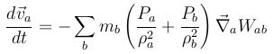
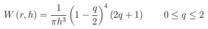
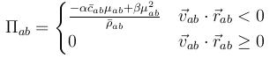
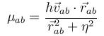
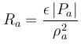
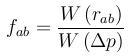

pair_style sph/artVisc/tensCorr command¶
Syntax¶
pair_style sph/artVisc/tensCorr kernelstyle args keyword values ...
- sph/artVisc/tensCorr = name of this pair_style command
- kernelstyle = cubicspline or wendland
- args = list of arguments for a particular style
cubicspline or wendland args = h h = smoothing length
- zero or more keyword/value pairs may be appended to args
- keyword = artVisc or tensCorr
artVisc values = alpha beta eta alpha = free parameter to control shear viscosity beta = free parameter to control bulk viscosity eta = coefficient to avoid singularities tensCorr values = epsilon deltap epsilon = free parameter deltap = initial particle distribution
Examples¶
pair_style sph/artVisc/tensCorr wendland 0.001 artVisc 1e-4 0 1e-8
pair_style sph/artVisc/tensCorr cubicspline 0.001 artVisc 1e-4 0 1e-8 tensCorr 0.2 1e-2
Description¶
The sph/artVisc/tensCorr style uses the smoothed particle hydrodynamics (SPH) method according to Monaghan (1992). The acting force is calculated from the acceleration as stated in the equation:
Whereas the indices a and b stand for particles, P<sub>j</sub> stands for pressure and ρ<sub>j</sub> for the density. W<sub>ab</sub> represents the kernel, which is defined by the kernelstyle.
For kernelstyle cubicspline a piecewise defined, 3-order kernel is used:

The wendland kernel (Wendland,1995) is defined as
The smoothing length h is the most important parameter for SPH-calculations. It depends on initial particle spacing, initial density ρ<sub>0</sub> and mass per particle m<sub>j</sub>. In case that the smoothing length is about 1.2 times the initial particle spacing and it is a 3-dimensional cubic lattice (therefore the summation is over 57 particles), you can use the following equation (Liu and Liu, 2003, p. 211-213):

The atom style sph/var uses the input argument h as initial smoothing length for all particles. In case the atom style sph (per-type smoothing length) is used an additional per-type property sl must be defined, e.g.,
fix m2 all property/global sl peratomtype 0.0012
For further details on the basics of the SPH-method we recommend the papers from Monaghan (1992), (1994), etc.
Optionally, this pairstyle can take into account the artificial viscosity proposed my Monaghan (1985), if the artVisc keyword is appended. In this case, Π<sub>ab</sub> is added to the bracket term in the above acceleration equation, where Π<sub>ab</sub> is given by
and
This expression produces a shear and bulk viscosity. The quadratic term enables simulation of high Mach number shocks. The parameter η<sup>2</sup> prevents singularities. A good choice is normally η<sup>2</sup>=0.01h<sup>2</sup>. The choice of α and β should not be critical, although there are some aspects which you should take into account:
“In the present case, with negligible changes in the density [weakly compressible SPH], the viscosity is almost entirely shear viscosity with a viscosity coefficient approximately αhc.” (Monaghan, 1994)
Bar-parameters like c<sub>ab</sub> and ρ<sub>ab</sub> are mean values of particle a and b. NOTE: ρ<sub>ab</sub> is calculated, and for the calculation of c<sub>ab</sub> the per-type property speedOfSound has to be defined, e.g.,
fix m1 all property/global speedOfSound peratomtype 20.
By appending the keyword tensCorr you enable the tensile correction algorithm (Monaghan, 2000) which improves results in combination with negative pressures (e.g. EOS like Tait’s equation). This method adds R*(f<sub>ab</sub>)<sup>n</sup> to the bracket term, where the factor R is related to the pressure and can be calculated by R=R<sub>a</sub> + R<sub>b</sub>. In case of negative pressures (P<sub>a</sub> < 0) we use the rule
otherwise R<sub>a</sub> is zero. Typical values of epsilon are about 0.2. fab is calculated by
where Δp denotes the initial particle spacing. NOTE: In a next version this calculation should be improved too.
Mixing, shift, table, tail correction, restart, rRESPA info:
The pair_modify mix, shift, table, and tail options
are not relevant for sph pair styles.
These pair styles write their information to binary restart files, so a pair_style command does not need to be specified in an input script that reads a restart file.
These pair styles can only be used via the pair keyword of the run_style respa command. They do not support the inner, middle, outer keywords.
Restrictions¶
...